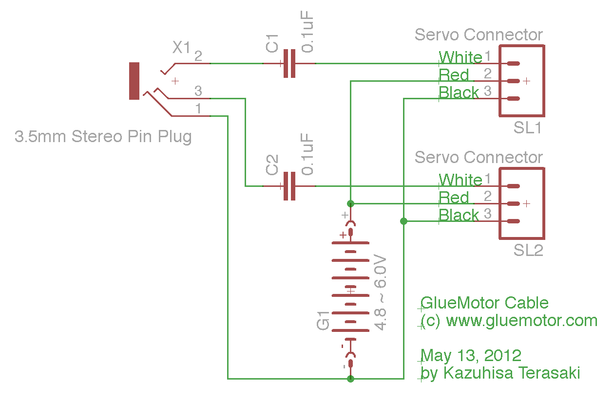

Volume:
Ch1 Degrees: -90
+90
Ch2 Degrees: -90
+90

Note: This circuit will only work with devices that have a very loud audio output. In most cases, a simple transistor amplifier will be required. If you can help with the design of such an amp using commonly available parts, please contact us.
ToDo:
In the short time this page has been up, the Web Audio API has already changed and broken it. First by replacing context.createGainNode(); with context.createGain(); and by replacing context.createBufferSource().noteOn(0); with context.createBufferSource().start(0);.
Based on this level of instability, and the fact that this method is not compatible with older SmartPhones and browsers, it may be better to focus on other methods of communicating with the world, such as the I2C via GIF idea.